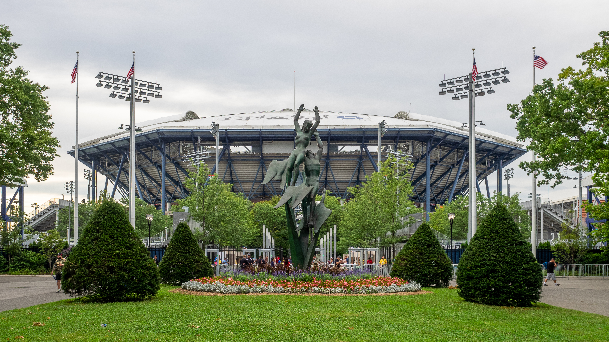

O US Open 2026 avançou mais uma etapa importante nesta quinta-feira, 3 de setembro, com a conclusão de parte da segunda rodada das chaves masculina e feminina de simples. O dia no USTA Billie Jean King National Tennis Center teve favoritos confirmando presença na fase seguinte, partidas longas e algumas das primeiras quedas de peso desta edição.
Entre as mulheres, Coco Gauff, Naomi Osaka, Iga Swiatek, Elena Rybakina e Mirra Andreeva seguem no torneio. No masculino, Taylor Fritz teve uma das vitórias mais dominantes da rodada, Alexander Zverev precisou disputar cinco sets novamente e Karen Khachanov e Botic van de Zandschulp protagonizaram duas das principais surpresas do dia.
A rodada também reforçou uma característica tradicional do torneio de Nova York: a combinação de grandes nomes, pressão das arquibancadas e espaço para resultados inesperados, com a história do US Open.
A rodada de 3 de setembro deu sequência a uma primeira semana movimentada em Nova York. Antes dos jogos que fecharam parte da segunda rodada, o torneio já havia produzido partidas importantes e definido novos caminhos nas duas chaves, como mostra a cobertura dos resultados em 1º de setembro.
Fritz domina, Zverev sofre e favoritos caem no masculino
Taylor Fritz produziu um dos placares mais contundentes do dia. O americano derrotou Mattia Bellucci por 6/0, 6/1 e 6/1, cedendo apenas dois games durante toda a partida. Finalista do US Open em 2024, Fritz garantiu presença na terceira rodada sem precisar enfrentar os mesmos problemas que apareceram em outros confrontos da chave masculina.
Alexander Zverev viveu um cenário completamente diferente. O alemão precisou de quatro horas e 33 minutos para superar Quentin Halys por 6/4, 4/6, 7/6(3), 6/7(3) e 6/3. Foi a segunda partida consecutiva de cinco sets de Zverev nesta edição, aumentando o desgaste físico logo nas primeiras fases do torneio.
As grandes surpresas ficaram por conta das eliminações de Felix Auger-Aliassime, Alex de Minaur e Lorenzo Musetti. Karen Khachanov virou sobre Auger-Aliassime e venceu por 6/7(5), 6/3, 6/2 e 6/2. Botic van de Zandschulp despachou De Minaur em sets diretos, por 6/4, 7/5 e 6/2. Já Dane Sweeny eliminou Musetti de virada, por 3/6, 6/1, 6/2 e 6/2.
Outro momento de destaque foi a vitória de Learner Tien sobre Gael Monfils. O americano fechou a partida em 6/3, 6/4 e 6/3. Como Monfils anunciou que encerrará a carreira ao fim da temporada, o confronto marcou sua última participação no US Open. Tien, por sua vez, avançou à terceira rodada de um Grand Slam pela terceira vez em 2026.
Resultados do masculino em 3 de setembro:
- Francisco Cerúndolo venceu Jan-Lennard Struff
- Luciano Darderi venceu Dalibor Svrcina
- Karen Khachanov venceu Felix Auger-Aliassime
- Taylor Fritz venceu Mattia Bellucci
- Dane Sweeny venceu Lorenzo Musetti
- Jakub Mensik venceu Jurij Rodionov
- Alejandro Tabilo venceu Alexei Popyrin
- Flavio Cobolli venceu Tristan Schoolkate
- Alexander Blockx venceu Marco Trungelliti
- Benjamin Bonzi venceu Ignacio Buse
- Botic van de Zandschulp venceu Alex de Minaur
- Zizou Bergs venceu Jesper de Jong
- Arthur Gea venceu Zachary Svajda
- Learner Tien venceu Gael Monfils
- Michael Zheng venceu Bu Yunchaokete
- Alexander Zverev venceu Quentin Halys
Gauff avança, Osaka reage e Keys escapa de eliminação
Na chave feminina, Coco Gauff passou por Paula Badosa em um confronto de peso no Arthur Ashe Stadium. A americana venceu por 6/4 e 7/6(5), garantindo presença na terceira rodada do US Open pelo quinto ano consecutivo. Badosa chegou a reagir no segundo set e levou a parcial ao tie-break, mas Gauff conseguiu fechar o jogo sem precisar de um terceiro set.
Naomi Osaka precisou trabalhar mais. A bicampeã do US Open abriu vantagem sobre Katerina Siniakova, perdeu o segundo set e respondeu de forma dominante no decisivo. O resultado correto foi 6/2, 5/7 e 6/1 para a japonesa.
Iga Swiatek teve uma trajetória mais tranquila contra Nadia Podoroska e venceu por 6/3 e 6/2. Mirra Andreeva também avançou com autoridade, superando Eva Lys por 6/0 e 6/2, enquanto Elena Rybakina derrotou Jessica Bouzas Maneiro por 6/2 e 6/4.
Uma das partidas mais dramáticas de toda a segunda rodada foi protagonizada por Madison Keys. A americana perdeu o primeiro set para Anna Bondar, ficou em situação delicada no terceiro e chegou a enfrentar cinco match points. Mesmo assim, conseguiu a virada por 5/7, 6/4 e 7/6(5). Keys venceu os últimos sete pontos do match tie-break depois de estar atrás por 5 a 3.
Resultados do feminino em 3 de setembro:
- Elise Mertens venceu Maria Timofeeva
- Anastasia Potapova venceu Leolia Jeanjean
- Madison Keys venceu Anna Bondar
- Iga Swiatek venceu Nadia Podoroska
- Naomi Osaka venceu Katerina Siniakova
- Amanda Anisimova venceu Lilli Tagger
- Marie Bouzkova venceu Harriet Dart
- Nikola Bartunkova venceu Tatjana Maria
- Alexandra Eala venceu Oleksandra Oliynykova
- Qinwen Zheng venceu Yulia Putintseva
- Cristina Bucsa venceu Himeno Sakatsume
- Mirra Andreeva venceu Eva Lys
- Yuliia Starodubtseva venceu Maria Sakkari
- Iva Jovic venceu Francesca Jones
- Coco Gauff venceu Paula Badosa
- Elena Rybakina venceu Jessica Bouzas Maneiro
Próximos confrontos do US Open 2026: terceira rodada completa
A terceira rodada das chaves masculina e feminina será disputada na sexta-feira, 4 de setembro, e no sábado, 5 de setembro. O calendário oficial reserva os dois dias para essa fase.
Terceira rodada masculina — sexta-feira, 4 de setembro
- Daniil Medvedev x Arthur Rinderknech
- Alexander Bublik x Tommy Paul
- Yibing Wu x Carlos Alcaraz
- Tomas Martin Etcheverry x Mariano Navone
- Alex Michelsen x Daniel Merida
- Jiri Lehecka x Stefanos Tsitsipas o
- Valentin Vacherot x Frances Tiafoe
- Ben Shelton x Denis Shapovalov
Terceira rodada feminina — sexta-feira, 4 de setembro
- Marta Kostyuk x Ekaterina Alexandrova
- Jasmine Paolini x Sorana Cirstea
- Aryna Sabalenka x Kamilla Rakhimova
- Jessica Pegula x Leylah Fernandez
- Taylor Townsend x Diana Shnaider
- Emma Navarro x Karolina Muchova
- Ann Li x Linda Noskova
- Elina Svitolina x Anna Kalinskaya
Terceira rodada masculina — sábado, 5 de setembro
- Alexander Zverev x Alejandro Tabilo
- Luciano Darderi x Dane Sweeny
- Michael Zheng x Arthur Gea
- Zizou Bergs x Botic van de Zandschulp
- Karen Khachanov x Benjamin Bonzi
- Jakub Mensik x Learner Tien
- Taylor Fritz x Francisco Cerúndolo
- Alexander Blockx x Flavio Cobolli
Terceira rodada feminina — sábado, 5 de setembro
- Iva Jovic x Alexandra Eala
- Cristina Bucsa x Coco Gauff
- Iga Swiatek x Marie Bouzkova
- Madison Keys x Qinwen Zheng
- Mirra Andreeva x Nikola Bartunkova
- Anastasia Potapova x Amanda Anisimova
- Naomi Osaka x Elise Mertens
- Yuliia Starodubtseva x Elena Rybakina
US Open entra na terceira rodada com grandes nomes ainda vivos
A rodada de 3 de setembro deixou a disputa mais seletiva, mas preservou várias candidatas importantes na chave feminina. Gauff, Osaka, Swiatek e Rybakina continuam na competição, assim como Keys, Anisimova e Andreeva. No masculino, Alcaraz, Zverev, Fritz, Medvedev, Shelton, Tiafoe e Tsitsipas estão entre os nomes de maior destaque ainda presentes no torneio.
A força dos donos da casa também ganhou destaque. Além de Fritz, Shelton e Tiafoe no masculino, os Estados Unidos seguem representados por nomes como Gauff, Pegula, Keys, Anisimova, Navarro, Townsend, Jovic e Ann Li na chave feminina.
A programação geral do US Open prevê a terceira rodada durante os dias 4 e 5 de setembro. Depois disso, as oitavas de final serão disputadas em 6 e 7 de setembro, antes da entrada definitiva na semana decisiva com as quartas de final. Assim, os resultados de 3 de setembro não definiram apenas mais uma rodada: começaram a desenhar os setores da chave que chegarão aos jogos de maior pressão em Flushing Meadows.